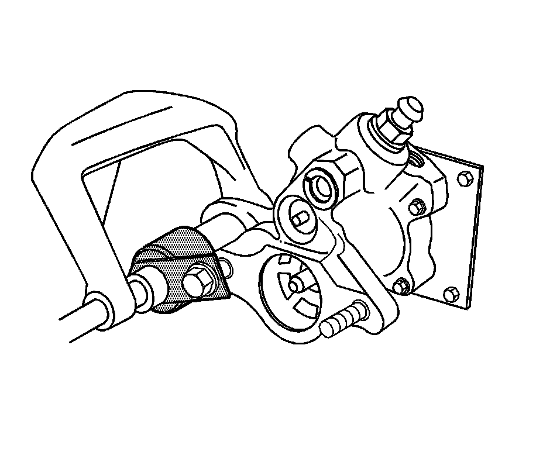
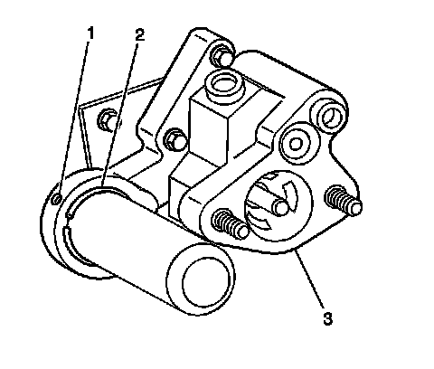
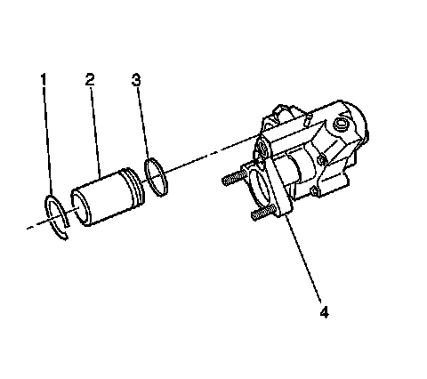

Hydraulic Fluid Accumulator: Service and Repair
Hydraulic Brake Booster Accumulator Replacement
Tools Required
J 26889 Accumulator Piston Compressor
Removal Procedure
Caution: The accumulator contains compressed gas. Always use the proper tools and follow the recommended procedures or personal injury may result. Do not apply heat to accumulator. Do not attempt to repair an inoperative accumulator. Always replace an inoperative accumulator with a new one. Dispose of an inoperative accumulator by drilling a 1.5 mm (1/16 in) diameter hole through the end of the accumulator can, opposite the O-ring.
Caution: Push rod removal is not recommended. Improper staking of the push rod to the Hydroboost reaction piston can result in a loss of brakes. If the rod or seals require service, the entire unit must be replaced.
1. Apply the park brake and block the wheels.
2. Depress brake pedal at least 10 times in order to relieve pressure in the accumulator.
3. Remove the master cylinder from the hydraulic booster.

4. Place the J 26889 over the end of the accumulator.
5. Install the nut on the stud.
6. Depress the accumulator with a C-clamp. If the accumulator does not move with moderate pressure, remove the C-clamp and depress the brake pedal ten times in order to relieve pressure in the accumulator.

7. Rotate the retaining ring (2) until either end of the ring is under the access hole (1).
8. Depress and hold the retaining ring (2) with a small tool inserted into the access hole (1).

9. Remove the accumulator retainer ring (1) using a small hook shaped tool.
10. Release the C-clamp.
11. Remove the nut from the stud.
12. Remove the J 26889.
13. Remove the accumulator (2) and the O-ring seal (3).
Installation Procedure
1. Lubricate all of the seals and the metal friction points with power steering fluid.
2. Install the accumulator (2) and the O-ring seal (3).
3. Place the J 26889 over the end of the accumulator.
4. Install the nut on the stud.
5. Depress the accumulator with a C-clamp.
6. Install the accumulator retainer ring (1).
7. Release the C-clamp.
8. Remove the nut from the stud.
9. Remove the J 26889.
10. Install the master cylinder to the hydraulic booster.
11. Release the park brake and unblock the wheels.